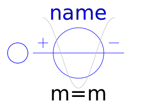
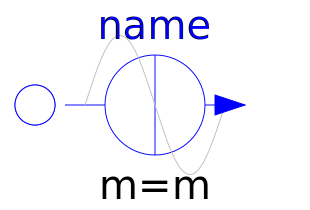

This package contains time-dependent and controlled multiphase voltage and current sources:
| Name | Description |
|---|---|
| Multiphase signal voltage source | |
| Multiphase constant voltage source | |
| Multiphase sine voltage source | |
|  CosineVoltage | Multiphase cosine voltage source |
| Multiphase signal current source | |
| Multiphase constant current source | |
|  SineCurrent | Multiphase sine current source |
| Multiphase cosine current source |